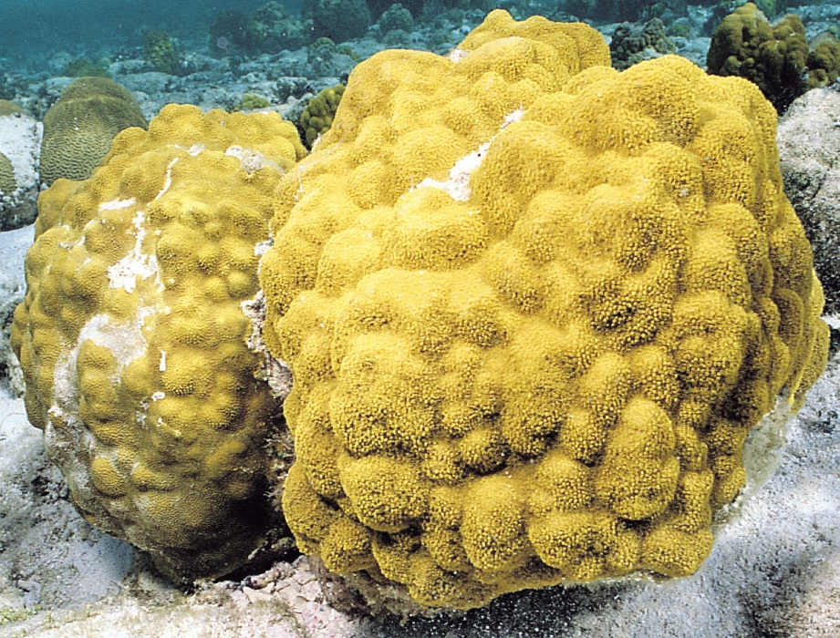
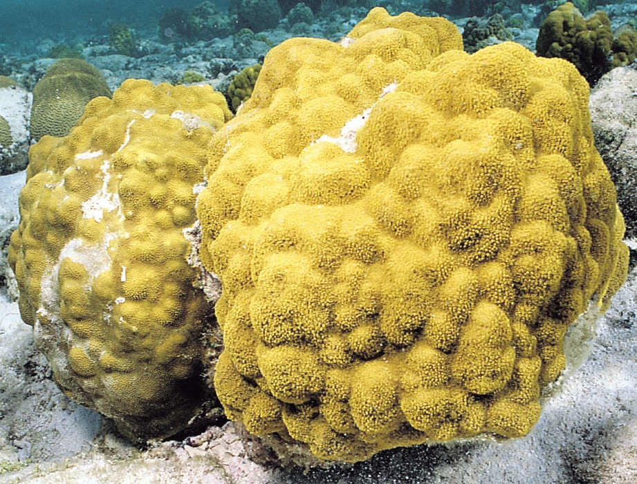

Functional Morphology
To construct an ecological reconstruction it’s necessary to understand the lifestyle of each animal within the ecosystem. Taphonomy – as you might expect – can get in the way of confidently reconstructing original life strategies. In this session we’ll explore how an organism’s lifestyle might be inferred from its fossil record.
Evaluate how an organism’s morphology might reflect its habit and habitat
Understand the strengths and limitations of inferring function from modern analogues
Infer environmental conditions from fossil morphology
 
